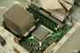

< < < Back
My Experience Building A Computer – Return Of Kings
At the end of my high school career, I quit playing video games that were wasting my valuable time. With a shift to working on personal self-improvement, my involvement in the Neomasculinity and red pill community as increased.
One thing I have incorporated into my learning is a number of seasonal projects, something that I do every three months. This has become my version of hobbies, and I am here to talk about the last one I completed a few months ago. During the winter season, I decided to build a computer, and now that I am finished, I would like to discuss the pros and cons of the experience.
Pros Of Building A Computer
- Gents, I would not suggest making this the conversation piece when you take that
annoying iPhone-addicted dumb loser special someone back to your place.
Customization
Everyone including myself prefers certain hardware specifications for certain parts, while usually being apathetic towards some specifications as well. This means that customization is a big part of any computer, and the only way you can get complete customization to fit your needs is to build a computer yourself. You can only go so far with customization when buying a computer compared to when you build your own.
Cost Effectiveness
Building a computer is cost effective for two reasons. The first goes back to the issue of customization. Because you are buying individual parts, you can save money by buying bare essential hardware that you are indifferent towards. The second aspect is the fact that you are cutting one of the middlemen out the computer business, which means you will be saving a lot of margin that a company would typically make on assembly and sale, etc.
Cons Of Building A Computer
Time requirement
One of my computer science professors loves to say: “When dealing with computers, allot three times the amount of time you think it will take you to finish,” and he could not be more correct. When I was building a computer, I ran into multiple problems that took a lot of time to fix. Be prepared to deal with malfunctioning hardware, BIOS issues, and other configuration problems.
When you are done, you are on your own: If something is not working on the software end and you cannot fix it, you do not have a fallback like a refund. You will only be refunded for deficient parts, and this could be a serious issue if you are not heavily versed in troubleshooting.
When Is It Worth It?
You should build a computer when you need something really advanced to handle a very specialized workload. If you are just searching the internet or writing Word docs on your computer, I would not suggest doing it. The money you save on building your computer becomes greater as your computer becomes more advanced and specialized.
Tips and Tricks
Because computers are very idiosyncratic in nature, I unfortunately cannot give you a large amount of detail on how to exactly build/configure your PC; however, I am going to pose a few general guidelines.
How to search for parts
The one part that is filled with a weird mixture of exuberant and anxiety.
You first have to find out what you are looking for when it comes to computers:
- RAM: An acronym for random access memory, this is the part of the working memory that currently in use software/programs have access to currently. This is measured in gigabytes, and the more the better. If you like to multitask on your computer, pick up more RAM. If you are a hard core programmer, the bare minimum to have on a Desktop is 8 gigs for laptops and 16 for desktops; however, if you are in data analytics, and other areas of computing that are computer intensive, I would move up to around 32/64 for desktops.
CPU: The CPU is in essence where all computations and calculations occur in a computer. The more power your CPU has, the faster the computer is going to be overall. This is generally something you want to put your money towards regardless of what you are doing. There are two specifications that you need to look for when searching for a processor: cores and speed (in Ghz). Usually when there is a tradeoff between cores and GHz, you go for more cores.
CPUs is an industry where consumers are very brand-oriented. You either are an Intel person, or you’re not. Intel CPU’s are without a doubt more reliable compared to CPU’s such as AMD; however, AMD’s are a lot cheaper and definitely a possible option for the price conscious without sparing performance
Motherboard: This is where you connect everything on your computer. Now there are some tech specs to motherboards, but I would suggest buying a gigabyte motherboard that matches all of your parts. If you do not know whether all of your parts will be compatible, I would suggest using the site: PC Part Picker.
Hard Memory: This is the actual storage for things on your computer when they are not in use. If you have a lot of shit that you store electronically, beef up on this; however, even as a data analyst, I do not use more than a few terabytes. Also, an important thing to note is that there is regular hard memory and SSD memory. SSD memory is faster in boot time; however, it is a lot more expensive, and is generally not worth it unless you do not use a lot of memory.
What I did for my computer is get one small SSD, and put my two operating systems and software on there for a fast boot time, while buying the rest of my memory as external hard drives, which is a big plus if you need portable memory.
Other stuff: There is a lot of other stuff I would like to discuss, but cannot due to the lack of brevity already apparent in this article. What I would say is if you are a gamer, look into very strong video cards (or maybe multiple) and high resolution monitors.
Building the actual computer
This is where the process gets very sticky. The hardware part was not that hard for me, but the software was rough. You are really going to need to pay attention to drivers, but a great place to start the building process is with this sequence of videos.
Conclusion
Building a computer was something that challenged me a lot more than I would like to admit, but now that I have finished, it is a great feeling. I want to emphasize that it will take a lot of time. If you also live in an urban area like where I am from, Chicago, it is easy to find little computer shops where people would build it for you. It will cost a good chunk of money, but typically no more than what you are saving from buying all of the individual parts, so it is something to look into.
However, if you are into computers, and want to learn and cherish a system that you built from the ground up, it is worth it. Happy building.
Read More: Are We Living In A Computer Simulation?


{kind=link}
{kind=link}